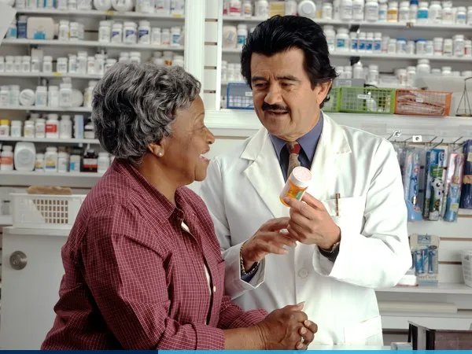

18+
Years Digital CareRedefining How the UK Experiences Specialist Healthcare
Stackly Telemedicine was established by a consortium of Harley Street cardiologists, neurologists, and digital health engineers with a single conviction: geography and waiting lists should never delay a life-changing medical diagnosis.
Over the past 18 years, we have evolved from a regional tele-triage desk into the United Kingdom's most comprehensive virtual hospital ecosystem—serving over 45,000 patients annually with sub-8-minute GP access and same-day consultant reviews.
- 100% GMC-Registered Consultants
- CQC "Outstanding" Clinical Rating
- Direct NHS Spine & GP Summary Sync
- 24/7 Multilingual UK Triage Desk
Our Mission, Vision & Values
Every algorithm we deploy and every video consultation we conduct is anchored in patient safety, clinical rigor, and equitable access.
Our Clinical Mission
To deliver immediate, hospital-grade medical consultations, continuous biometric monitoring, and same-day prescription therapy to every household in the UK—eliminating preventable emergency admissions.
Our 2030 Vision
To pioneer predictive, AI-augmented home healthcare where wearable telemetry and specialist clinicians collaborate continuously to detect cardiovascular, neurological, and metabolic conditions before symptoms arise.
Our Ethical Charter
Uncompromising medical privacy, zero commercial bias in prescribing, full fee transparency prior to booking, and compassionate continuity of care with the same named consultant.
18 Years of Telehealth Innovation
Key clinical and technological milestones that shaped Stackly Telemedicine into the UK's premier digital hospital.
Harley Street Tele-Triage Launch
Launched the UK's first encrypted second-opinion cardiology and neurology telephone & secure video relay from 221B Harley Street, London.
Nationwide Digital Prescriptions
Integrated cryptographic barcode e-prescribing across 500+ UK pharmacies, allowing patients to collect medications within 30 minutes of their call.
24/7 Remote ICU & Wearables
Deployed cellular home vitals kits (12-lead ECG, spirometers, continuous glucose sensors) streaming real-time alerts to our nurse command hub.
AI Diagnostics & 4K Virtual Pods
Introduced real-time DICOM radiology AI triage, computer-vision tele-physiotherapy, and 980+ pharmacy courier hubs nationwide.
Military-Grade Medical Data Security & Encryption
We engineered our proprietary telehealth platform from the ground up to exceed NHS Digital, UK GDPR, and HIPAA security mandates. Every consultation and diagnostic packet is protected by hardware security modules.
WebRTC AES-256
End-to-end encrypted 4K video and digital stethoscope audio streams.
UK Sovereign Cloud
100% of electronic health records reside in ISO 27001 London data centers.
Biometric MFA Access
FaceID & hardware token authentication for patients and clinicians.
FHIR HL7 Interoperability
Seamless, consent-driven clinical summary sharing with your NHS GP.
Meet Our Executive Leadership
Guided by senior UK physicians and healthcare technologists dedicated to safe, evidence-based virtual medicine.
2026 Clinical Quality & Safety Benchmarks
Every month, our Clinical Governance Committee audits 10% of all virtual consultations against NICE (National Institute for Health and Care Excellence) guidelines and antimicrobial stewardship protocols.
Fully Accredited Across the United Kingdom
Stackly Telemedicine operates under strict statutory oversight from UK healthcare regulators, ensuring your virtual care meets the exact same legal and clinical standards as an in-person private hospital.
Care Quality Commission
Registered Provider ID: CQC-UK-90421 (Rated Outstanding in Responsiveness).
General Medical Council
Annual appraisal and revalidation verification for all 220+ clinicians.
GPhC Registered
General Pharmaceutical Council regulated digital dispensing network.
ISO/IEC 27001:2022
Independently audited clinical information security management.
1,420 Tons
Patient Travel CO2 Saved
8 Min
Average GP Connection Time
94%
A&E Visits Avoided via Triage
380+
UK Corporate Health Partners
Schedule a Virtual Clinic Consultation or Corporate Demo
Whether you are booking a personal specialist video appointment or exploring Stackly Telemedicine coverage for your UK organization, complete the form and our Harley Street team will reach out promptly.
London Headquarters
221B Harley Street, Marylebone, London W1G 9QT, United Kingdom
Direct Hotline
Official Email
Virtual Care & Partnership Request Form
All fields are required. Name accepts alphabets only; Phone accepts numbers only; Past dates are restricted.